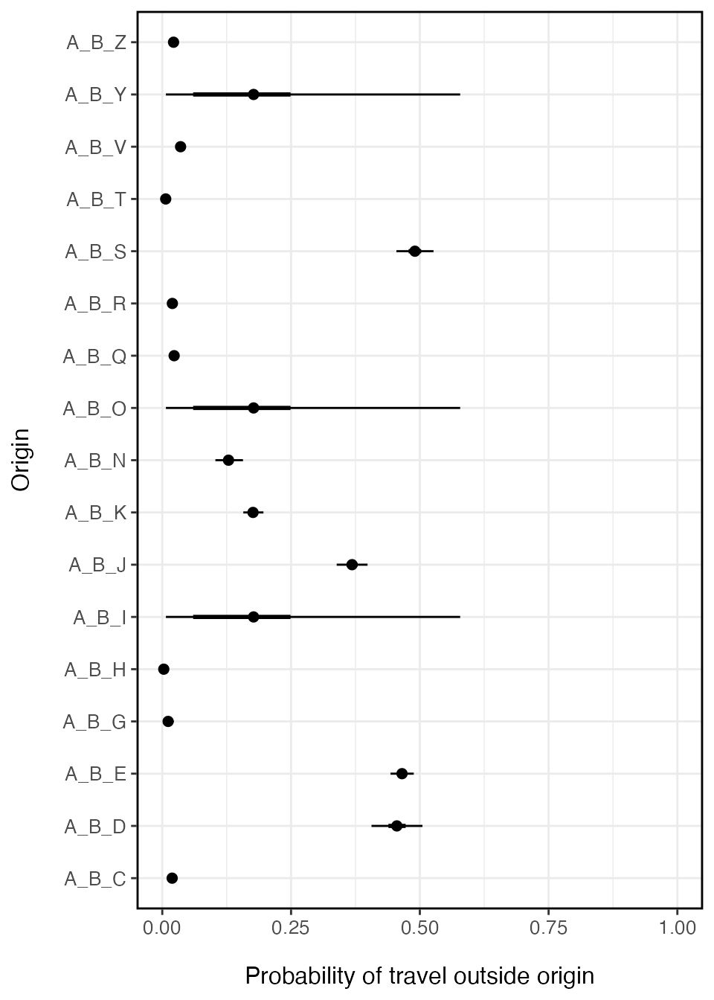

vignettes/V4_fitting_prob_travel.Rmd
V4_fitting_prob_travel.RmdThe travel probability model requires two pieces of information: the number of trips for the time interval that travel outside the origin location (\(y_i\)) and the total number of trips observed for that origin (\(m_i\)). Both vectors must be the same length but they can have missing values (NA) that represent an unobserved origin location. The get_stay_data() function can be used to build trips for each location that are aggregated to a desired spatial scale (e.g. admin level 1 or admin level 2).
stay_data <- get_stay_data(travel_data_sim, agg_adm=2) #> Added missing unique location names. #> Using total trip count method y <- setNames(stay_data$travel, stay_data$orig_id) m <- setNames(stay_data$total, stay_data$orig_id) n_orig <- length(y) miss <- sample(1:n_orig, n_orig*0.2) # missing observations y[miss] <- m[miss] <- NA y #> A_B_C A_B_D A_B_E A_B_G A_B_H A_B_I A_B_J A_B_K A_B_N A_B_O A_B_Q A_B_R A_B_S #> 21 176 904 5 0 NA 331 250 74 NA 36 23 346 #> A_B_T A_B_V A_B_Y A_B_Z #> 6 44 NA 26 m #> A_B_C A_B_D A_B_E A_B_G A_B_H A_B_I A_B_J A_B_K A_B_N A_B_O A_B_Q A_B_R A_B_S #> 1150 384 1941 531 322 NA 896 1421 577 NA 1593 1217 703 #> A_B_T A_B_V A_B_Y A_B_Z #> 1035 1254 NA 1218
To estimate the probability of traveling outside the origin location \(i\), the fit_prob_travel() function uses a Beta-Binomial model with hierarchical structure to infer travel probability in unobserved locations. \[
y_i \sim \text{Binom}(\tau_i, \sum_{\forall j} m_{ij})
\] The random variable \(y_i\) is the observed number of trips that leave origin \(i\) within the time interval. Binomial parameters \(\tau_i\) and \(\sum_{\forall j} m_{ij}\) are the success probability and total number of observed trips emanating from origin \(i\) respectively. \[
\begin{aligned}
\tau_i &\sim \text{Beta}(1+\alpha, 1+\beta) \\
\tau_\text{pop} &\sim \text{Beta}(1+\bar{\alpha}, 1+\bar{\beta})
\end{aligned}
\] Binomial probabilities for each origin \(\tau_i\) are drawn from a Beta distributed prior with shape and rate parameters \(\alpha\) and \(\beta\). The hierarchical structure comes from estimating \(\alpha\) and \(\beta\) as population-level hyper-priors for the origin-level probabilities \(\tau_i\) and allowing \(\tau_\text{pop}\) to inherit the overall population-level distribution denoted as \(\bar{\alpha}\) and \(\bar{\beta}\). \[
\begin{aligned}
\alpha &\sim \text{Gamma}(0.01, 0.01) \\
\beta &\sim \text{Gamma}(0.01, 0.01)
\end{aligned}
\]
This structure allows origin locations to have probabilities \(\tau_i\) which are driven by data in each location and all unobserved locations regress to the population mean \(\tau_\text{pop}\).
prob_trav <- fit_prob_travel(travel=y, total=m) #> These missing locations will inherit population mean: #> A_B_I A_B_O A_B_Y #> Compiling model graph #> Resolving undeclared variables #> Allocating nodes #> Graph information: #> Observed stochastic nodes: 14 #> Unobserved stochastic nodes: 17 #> Total graph size: 50 #> #> Initializing model #> #> NOTE: Stopping adaptation
prob_trav_smry <- summary(prob_trav, probs=c(0.025, 0.25, 0.75, 0.975)) ggplot(data=prob_trav_smry) + geom_point(aes(x=mean, y=names(y)), size=2) + ggstance::geom_linerangeh(aes(y=names(y), xmin=Q2.5, xmax=Q97.5)) + ggstance::geom_linerangeh(aes(y=names(y), xmin=Q25, xmax=Q75), size=1) + xlab('Probability of travel outside origin') + ylab('Origin') + xlim(0,1) + theme_bw() + theme(axis.text.x=element_text(size=10), axis.text.y=element_text(size=10), axis.title.x=element_text(size=12, margin = margin(t = 15)), axis.title.y=element_text(size=12, margin = margin(r = 15)), panel.border = element_rect(colour = "black", fill=NA, size=1), legend.position='right')

There can be relatively large confidence intervals around the travel probability estimated for locations without data. Since these locations inherit the population-level mean, uncertainty will likely be higher than locations with data. If we wanted to then use this model in a simulation, we may want to include this uncertainty in the model.
The predict() function can be used to simulate the fitted values of travel probability for each location. The function takes posterior estimates of the mean (\(\mu\)) and standard deviation (\(\sigma\)) for each origin \(i\), and then derives the shape and rate parameters for the Beta distribution. Simulated values are random draws from this Beta distribution.
# Simulate n realizations of travel probability for each location predict(object=prob_trav, nsim=5, seed=123) #> [,1] [,2] [,3] [,4] [,5] #> A_B_C 0.0167501135 0.018151160 0.028854062 0.019497433 0.01977168 #> A_B_D 0.5109116124 0.468652576 0.435535149 0.442645725 0.49273360 #> A_B_E 0.4701662112 0.470712361 0.466883204 0.458083855 0.47201717 #> A_B_G 0.0037315159 0.016023071 0.009027765 0.006612166 0.01022758 #> A_B_H 0.0005614135 0.000928257 0.001099007 0.000158162 0.01083817 #> A_B_I 0.1419687204 0.020947801 0.093265333 0.263929720 0.04187634 #> A_B_J 0.3845709188 0.383460726 0.380904253 0.378380234 0.36736382 #> A_B_K 0.1725927454 0.171723597 0.168009747 0.173733792 0.16084784 #> A_B_N 0.1501651371 0.111090303 0.122356879 0.121377308 0.14168614 #> A_B_O 0.1991477336 0.122187162 0.184531949 0.188267687 0.01649968 #> A_B_Q 0.0220613900 0.031613063 0.025777495 0.023579824 0.02399741 #> A_B_R 0.0213695855 0.017431353 0.018137193 0.015334299 0.01512047 #> A_B_S 0.4967676242 0.499811239 0.491572930 0.510242676 0.48024546 #> A_B_T 0.0018979450 0.010582907 0.004847146 0.004895640 0.01068822 #> A_B_V 0.0339221455 0.028713659 0.036610498 0.034745375 0.03557604 #> A_B_Y 0.0995717845 0.290348235 0.065133468 0.239565487 0.10828466 #> A_B_Z 0.0275999728 0.023907126 0.020496359 0.027937429 0.02695324 #> attr(,"model") #> [1] "prob_travel" #> attr(,"seed") #> [1] 123 #> attr(,"seed")attr(,"kind") #> attr(,"seed")attr(,"kind")[[1]] #> [1] "Mersenne-Twister" #> #> attr(,"seed")attr(,"kind")[[2]] #> [1] "Inversion" #> #> attr(,"seed")attr(,"kind")[[3]] #> [1] "Rejection"